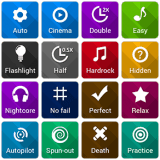

MAKKELIJKER: in osu heb je 3 mods die het makkelijker maken maar dan krijg je ook minder pp.
1) no fail : hierbij kun je niet af gaan.
2) easy : hierbij zijn de note groter en zijn ze makkelijker te raken.
3) half time : hierbij gaat de map 2 x zo sloom.
MOEILIJKER : je hebt 5 mods die het moeilijker maken.
1) hidden : hierbij vagen de noten langzaam weg.
2) hardrock : hierbij komen de noten sneller en heb je dus minder tijd om te reageren.
3) flashlite : hierbij kun je maar een kleine area om je cursor heen zien.
4) double time : hierbij is de speed multiplier 1.5x
5) sudden death : als je een noot mist moet je opnieuw beginnen
6) perfect : je gaat af als je niet 100 % accuratie hebt.
SPECIAL : je hebt 3 special mods
1) relax : hierbij hoef je niet te klikken alleen maar te aimen
2) auto pilot : hierbij hoef je alleen maar te klikken
3) spunout : hierbij hoef je bij spinners niet te draaien
